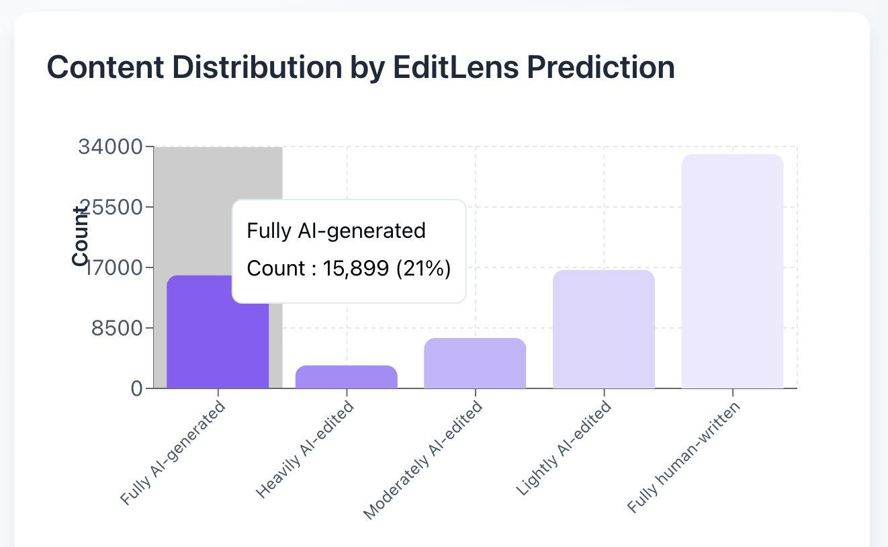
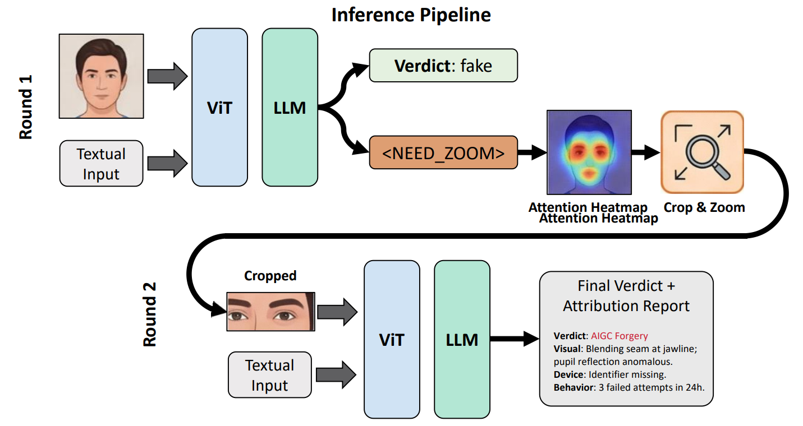
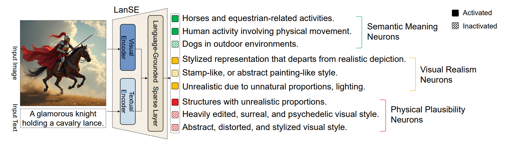
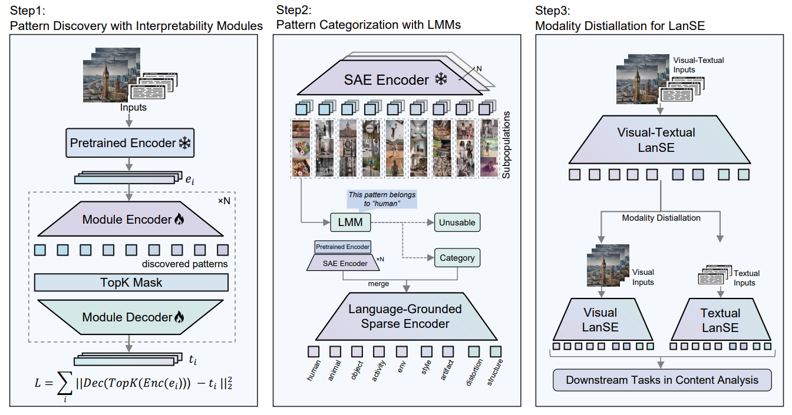
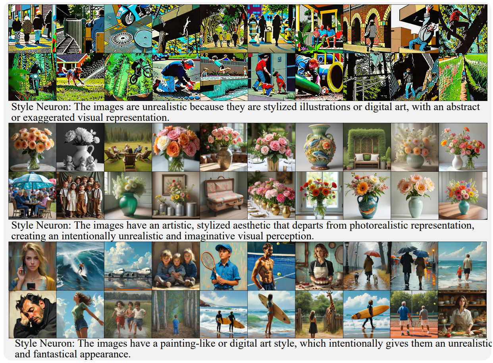
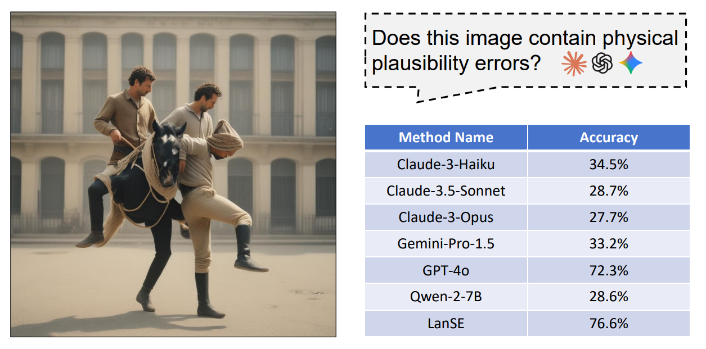
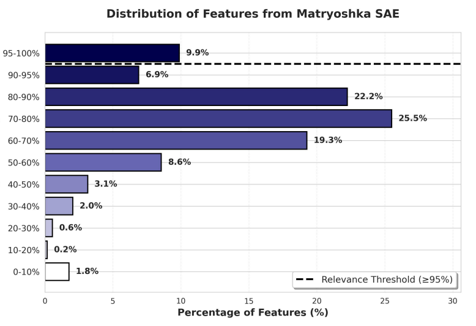
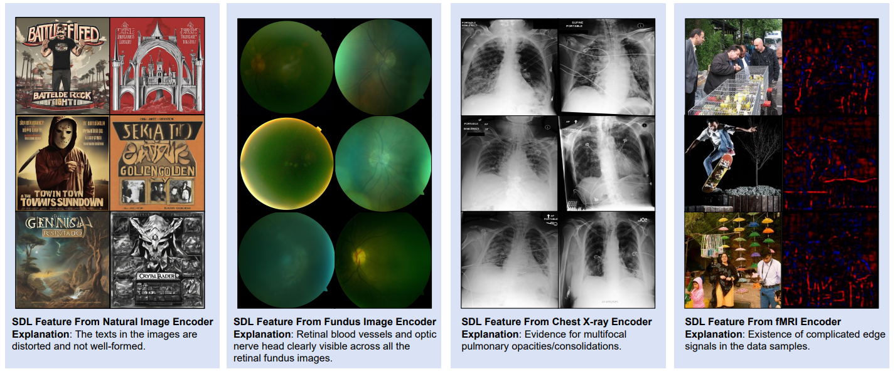

Watermarks of AI-Generated Content: The Crossroads of Detection, Reaction, and Annotation
What three papers and six months of front-line forgery detection taught me about the watermarks AI leaves behind
Whenever we must decide on content of uncertain origin, the decision is only as good as the watermarks we can read from it.
1. The End of the Human-Only Era
For thousands of years, nearly everything people read, looked at, and listened to could be traced back to human thought and effort. A painting had a painter, a diagram had an author, a diagnosis had a clinician. The assumption was so basic that nobody wrote it down.
Generative AI has brought an end to this era, producing seemingly indistinguishable alternatives at unprecedented scale, permeating every domain from scientific publications to medical diagnostics to artistic designs. In controlled studies, AI-written poetry has been rated as favorably as human poetry and was hard to tell apart from it, and AI-synthesized faces have been judged as more trustworthy than real ones. The point is not that these systems are bad. The point is that the default has changed: when we meet a piece of content today, where it came from has become a question, and many of our institutions (peer review, identity verification, medical records, publishing) still run on the old default.
2. Why We Need to Tell Them Apart
The news over the past year has made this concrete, and it comes from places that look very different from each other.
Peer review. An analysis by Pangram Labs flagged about 21% of the 75,800 reviews submitted to ICLR 2026 as fully AI-generated, with more than half showing some sign of AI use (coverage). ICML 2026 asked reviewers to choose between a policy that bans LLM use and one that permits limited assistance, then hid instructions in each submission PDF so that any LLM reading it would emit chosen phrases. About 1% of reviews were flagged, 506 reviewers who had chosen the no-LLM policy were caught, and 497 papers were desk-rejected under the conference's reciprocal-reviewing rules (ICML's account). In the opposite direction, AAAI-26 gave every main-track submission one clearly labeled AI review, 22,977 in total, and surveyed authors and committee members, who rated those reviews higher than human reviews on six of nine quality dimensions (report).

AI involvement in ICLR 2026 peer reviews, as estimated by Pangram's EditLens. The chart reports 15,899 reviews (21%) classified as fully AI-generated; these are detector estimates, not manually verified labels. Image: Pangram Labs.
Micro-dramas. In China, the question arrived through short serialized video, a market that passed 100 billion yuan in 2025. Rules issued in 2025 require AI-generated audio and video to carry both a visible label and implicit metadata about its origin, guidance on classifying AI micro-dramas has applied since July 2026, and new management measures for micro-dramas took effect on 1 September 2026 (IT Home, The Paper). Behind the rules are concrete disputes: scripts that models rewrite from web novels without authorization, since roughly 70% of micro-dramas in 2025 were adapted from web novels, and faces or voices blended from recognizable people (China News).
Chinese micro-drama platforms. A sample browsing page illustrating the scale and variety of short-form serialized video content.
Identity. As generative AI advances, new security threats are emerging in online identity verification. Attackers can use AI-generated face videos that mimic liveness cues, such as blinking or opening the mouth, in attempts to deceive verification systems. A successful attack can lead to account takeover, with compromised accounts subsequently resold or exploited for financial gain. In this setting, the cost of mistaking synthetic content for a real person is immediate and concrete.
AI-enabled identity fraud. Conceptual illustration of a synthetic face video attempting to pass liveness checks and enable account takeover; not a depiction of a specific incident.
Beyond these, the literature documents a longer list of harms: accelerated misinformation, data-poisoning attacks on medical language models, homogenization of creative output, model collapse when models train on their own outputs, contamination of scientific datasets, and erosion of editorial standards. These are different problems, and they share a first step. To govern AI-generated content, we have to be able to say which content it is. Identification does not complete governance, but governance cannot start without it.
3. Look at TPR at Low FPR, Not Just AUC
For about six months at Alibaba, I worked on face forgery detection for identity verification. One of the most useful things I learned there was how the problem is judged in practice.
Papers and benchmarks often report AUC, which summarizes a detector across every possible threshold. A deployed system often relies on one final decision threshold, set in part by how many legitimate users it can afford to flag. In identity verification nearly all traffic is genuine, so even a small false-positive rate produces a large number of wrongly blocked people.
To make the problem concrete, consider four publicly available detector architectures associated with DeepFakeBench. In the evaluation summarized below, every model reaches an AUC above 0.98. Yet when the false-positive rate is constrained to just 0.1%, their true-positive rates range from 60.7% to 72.0%. A detector can therefore look excellent in a conventional benchmark while missing a substantial fraction of forgeries at a practical operating point.
Table 1. High AUC does not guarantee strong detection at low FPR. Results from the evaluated DeepFakeBench-based detectors. TPR@0.1% FPR is reported with the supplied 95% confidence intervals. These results describe this evaluation, not an official leaderboard or a claim about every DeepFakeBench setting.
| Detector | AUC | TPR @ 1% FPR | TPR @ 0.1% FPR (95% CI) |
|---|---|---|---|
| ViT | 0.9922 | 88.9% | 71.9% (69.4–85.8) |
| F3-Net | 0.9889 | 82.7% | 72.0% (60.3–76.8) |
| Xception | 0.9882 | 84.5% | 65.5% (46.0–69.8) |
| SPSL | 0.9871 | 86.6% | 60.7% (45.2–77.0) |
This suggests a change in how we benchmark forgery detection. Rather than treating AUC as the headline metric, we should report TPR at fixed, low FPR budgets with confidence intervals. Ideally, benchmarks should also test robustness to distribution shift and changes in attack prevalence.
4. Watermarks: The Crossroad for Content Analysis
Through my work at Alibaba, one object kept coming back under different names: the specific thing in a piece of content that tells us a machine made it. I will call it a watermark. Three jobs depend on it: detection, reaction, and annotation.
Detection reads watermarks as evidence
A verdict without evidence cannot be audited, appealed, or improved. A detector that outputs "fake, 0.97" gives a reviewer nothing to check and gives an engineer nothing to fix. A detector that points to the watermarks behind its decision gives both.

ForensicZoom ends in an attribution report, not a score. In round 1 the model returns a verdict or requests a closer look with <NEED_ZOOM>; the region it attended to is cropped and magnified, and round 2 produces a verdict together with a report identifying visual watermarks (a blending seam at the jawline, an anomalous pupil reflection), alongside supporting device evidence (identifier missing) and behavioral evidence (three failed attempts in 24 hours).
Reaction acts on watermarks
A policy can be written over watermarks. Whether to accept, reject, or escalate a request depends on which watermarks are present, how strong they are, and what other evidence is available. A blending seam together with a missing device identifier may justify a rejection, while a single weak watermark may only justify asking the user to retry. Rules written over named watermarks can be reviewed, tested against false rejections, and explained to the person who was rejected. A rule written over a bare score can only be tuned.
Annotation teaches watermarks
Models are trained on labeled data, and labelers work from a standard operating procedure. "Is this image AI-generated?" is a difficult question to answer consistently. "Which of these watermarks are present?" is easier. When the vocabulary of watermarks is shared between the SOP, the detector, and the policy, a disagreement can be traced to a particular watermark and corrected there, instead of being argued about as a whole-image judgment.
The three jobs also feed each other. Annotation produces data, data produces better detectors, better detectors surface new failures, and new failures become new watermarks in the vocabulary.
All three jobs read from and write to one vocabulary of watermarks. Detection reads watermarks as evidence, reaction writes policy over them, and annotation extends them; the dashed arc shows failures found in deployment returning to the vocabulary as new watermarks.
5. What Is a Watermark?
Let me provide a definition for watermarks.
Watermark. A pattern in content whose presence reliably indicates that the content was AI-generated, whether planted deliberately or arising from the generation process.
Two properties separate one kind of watermark from another. The first is origin: who or what put it there. The second is articulability: whether a person can read it and check it, or only a detector can.
Table 2. Watermarks differ by origin and by articulability. The rows give the three origins considered here; “Planted by” names who or what introduces the watermark, “Example” gives one instance, and the last column says whether a person can typically read it.
| Origin | Planted by | Example | Articulable to a person? |
|---|---|---|---|
| Embedded | the provider, at generation time | statistical patterns in generated text; invisible watermarks in images; origin metadata required by labeling rules | Mostly no; a detector verifies it (metadata can be read directly) |
| Planted by the defender | the party who receives the content | hidden instructions in a submission PDF that make an LLM reviewer emit chosen phrases | The phrases are readable once triggered |
| Emergent | no one; the generation process leaves it | distorted text in generated images, anatomically impossible structures, a characteristic stylization | Often yes, when it can be put into words |
Two consequences follow. Planted watermarks depend on cooperation or foresight: someone has to put them there before the content is generated or before it arrives. Emergent watermarks do not, but they have to be found. And articulability matters unevenly across the three jobs. Detection at scale can live with opaque watermarks. Reaction and annotation cannot, because a person must read a watermark to act on it or to write it into an SOP. A watermark in this sense is evidence, not a verdict.
6. Where Do Watermarks Come From?
Planted by providers
Some providers embed watermarks in what their models generate: statistical watermarks for text, signed provenance metadata for images, and, where regulation requires it, implicit identifiers in audio and video files. When they work, they are the cleanest evidence available. They also have limits. They need the provider to cooperate, they do not exist for open-weight models run privately, and a watermark that can be planted can often be removed by paraphrasing, re-encoding, or a screenshot. ICML's organizers say the same about their own planted phrases: a reviewer could discover the instruction and work around it, so the number caught is a floor and not a ceiling.
Invisible watermarks. A conceptual illustration of watermarks that may not be apparent to a human reader but can be designed for verification by a detector.
Watermarks can be found in LMM representations
Where nobody planted a watermark, the generation process often leaves one anyway. The problem is finding such watermarks without a person guessing in advance what to look for. This is where tools from mechanistic interpretability are useful. A model's representation already encodes many patterns, and sparse dictionary learning separates them into units we can inspect one at a time.
In LanSE, we turn this into a vocabulary. Given an image and its caption, the encoder produces a sparse set of active neurons, each carrying a natural-language description of the pattern it detects.

LanSE reads an image as a short list of named patterns. An image–caption pair is encoded into a sparse layer whose neurons carry natural-language descriptions, grouped into semantic meaning, visual realism, and physical plausibility; filled boxes are the neurons activated by this image.
The vocabulary is built by discover-then-curate. Many sparse autoencoders and transcoders propose millions of candidate patterns, a large multimodal model describes what each candidate's top-activating samples have in common, and only candidates whose descriptions hold up are kept. The curation step matters, because raw sparse features include noisy and polysemantic ones. What survives is 5,309 patterns with 93.2% agreement between the descriptions and human judgment over more than 11,000 annotations.

The discover-then-curate pipeline has three steps. Step 1 trains interpretability modules on embeddings from a frozen pretrained encoder to propose candidate patterns; Step 2 has an LMM describe each neuron's top-activating samples and either assign a category or discard the neuron; Step 3 distills visual-only and text-only encoders, so images can be analyzed without captions.
Matryoshka Transcoders add a way to aim the search. Instead of asking what patterns exist in general, we train a classifier on the property we care about, here physical plausibility, and analyze that classifier's representations with hierarchical sparse features. The intuition is that patterns related to a task are more prevalent in a model trained for that task. On this benchmark the approach outperformed standard sparse autoencoders, transcoders, and Matryoshka SAEs on both of our relevance metrics.
Some of the patterns that come out look like useful watermarks. Others are only candidates. Style is the clearest case.

Style neurons are candidate watermarks. Each row shows images that strongly activate one neuron, with its description: stylized illustration or digital art (top), an artistic aesthetic departing from photorealism (middle), and a painting-like style (bottom). Whether such a style counts as a watermark depends on context, because it can be an intentional choice.
Finally, the patterns can do work. On 3,410 human-annotated images, 2,522 with physical plausibility errors and 888 without, LanSE detected the errors with higher accuracy than the general-purpose multimodal models we tested.

Mined patterns caught errors that general-purpose models missed. Accuracy at answering whether a generated image contains physical plausibility errors: LanSE 76.6% and GPT-4o 72.3%, against 27.7–34.5% for the five other models tested at the time (Claude-3-Haiku, Claude-3.5-Sonnet, Claude-3-Opus, Gemini-Pro-1.5, Qwen-2-7B). The task is detecting errors in generated images, which differs from telling real images from generated ones.
7. What Makes a Good Watermark?
Across these projects, I have found four properties that matter to the quality of watermarks.
Discriminative. A watermark that fires on much genuine content manufactures false accusations. What counts is the precision of the watermark itself: among the content that activates it, what fraction truly carries the property. Even with a good method, few candidate features reach a high bar.

Few candidate features are clean enough to serve as watermarks. Distribution of feature relevance for a Matryoshka SAE, where relevance is the share of a feature's activating images that carry the target property; the dashed line marks the 95% threshold, and 9.9% of features fall in the top bin, while most sit between 60% and 90%.
This is why the curation and the threshold exist. Candidates are cheap, and watermarks are the ones that pass.
Robust. A watermark should survive compression, resizing, screenshots, and re-encoding, and it should still hold on the next generation of generators. For emergent watermarks, this robustness needs to be tested rather than assumed.
Articulable. A person should be able to describe the watermark in one sentence and check it by looking. This is what lets reaction and annotation use it, and it is what the 93.2% agreement in LanSE measures. Articulability has a ceiling set by language, though. In our NeurIPS 2026 position paper on evaluating concept-based interpretability, we showed features that encode coherent, reproducible structure yet receive vague descriptions.

Some faithfully encoded patterns resist a one-line description. SDL features from natural-image, fundus, chest X-ray, and fMRI encoders, each with an LMM-generated explanation that ranges from specific (retinal blood vessels and optic nerve head) to vague (complicated edge signals).
A pattern like that may still help a detector. It cannot enter an SOP or be shown to a person who was rejected. So I would not equate “cannot be described” with “is not a watermark,” and I would not rely on articulable watermarks alone either.
Actionable. A watermark should support a decision, a policy rule, or a labeling instruction. A watermark that nobody can act on is a curiosity.
One practical note applies to all four. A single watermark is fragile, so I would rather rely on several partly independent ones. LanSE itself is built from an ensemble of many interpretability modules, partly because the feature sets of individual sparse autoencoders are known to be unstable across runs.
8. Closing
Detection, reaction, and annotation look like separate engineering problems, and in practice they read from the same place: the watermarks we can find in content. If that is right, the central question is where good watermarks come from. Providers can plant them when they cooperate. When they do not, the representations of the models we already have may let us find watermarks that no one planted, and tools from mechanistic interpretability are one way to do that. Whether those watermarks are good enough is a question to settle through rigorous evaluation against the criteria above.
In dealing with all this AI-generated content, may we still be able to say, “Glory to Mankind,” in this era of generative AI.